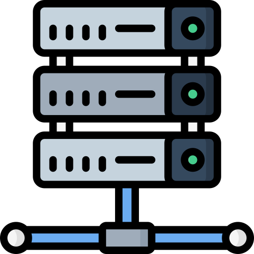

Este curso está diseñado para proporcionarte las herramientas necesarias para aprender sobre el servidor EFT. A continuación, encontrarás los módulos, recursos y actividades que te ayudarán a alcanzar tus objetivos.

Módulos del Curso
Tema 1: Escenarios de despliegue para servidores EFT
Tiene varias opciones para configurar el servidor EFT en su arquitectura de red.
A continuación, se describen algunos escenarios de implementación comunes.
Si ninguno de estos escenarios se ajusta a sus necesidades, el equipo de Servicios Profesionales de GlobalSCAPE
puede colaborar con usted para diseñar una arquitectura personalizada, asistirle con la instalación y
la configuración inicial, y ayudarle a crear scripts, reglas de eventos, comandos y bases de datos de usuarios externos personalizados.
Tema 2: Servidor EFT en una zona desmilitarizada (DMZ)
En el escenario de implementación más básico, tanto los usuarios finales como los socios comerciales (clientes) se comunican con el servidor EFT, ya que este reside en la DMZ de su organización. Todas las solicitudes de autenticación del servicio de directorio y el almacenamiento de datos se realizan dentro de la zona desmilitarizada.
El servidor EFT puede configurarse para reenviar todos los datos recibidos a la red de back-end y así mitigar los riesgos asociados a su almacenamiento en la DMZ. Esta arquitectura, comúnmente conocida como almacenamiento y reenvío, implica que los datos solo residen en la DMZ temporalmente antes de ser transferidos a un sistema de back-end para su procesamiento o almacenamiento. Esta arquitectura de almacenamiento y reenvío requiere una perforación en el cortafuegos de oeste a este, lo que supone una desviación de las mejores prácticas de seguridad. Esta arquitectura es la más utilizada por los competidores de la solución del servidor EFT de GlobalSCAPE.
Tema 3: Despliegue del servidor EFT y la Puerta de enlace DMZ
La solución de seguridad ideal consiste en implementar una arquitectura de dos niveles: el servidor EFT, implementado tras el firewall corporativo, y la puerta de enlace DMZ del servidor EFT, implementada dentro de la zona desmilitarizada. Esta configuración se conoce como configuración de transmisión o de paso a través.
- Servidor EFT a servidor EFT: Existen diversos enfoques híbridos que consisten en múltiples servidores con diversas configuraciones para distintos casos de uso empresarial. Por ejemplo, un escenario en el que la mayor parte del tráfico es de empuje saliente con ocasionalmente de extracción entrante, iniciado por un script automatizado o un proceso por lotes. En este escenario, los datos se generan tras el firewall corporativo y luego se reenvían de un servidor EFT a otro servidor EFT ubicado en la DMZ para la recogida del cliente, o directamente del servidor backend a un servidor de destino ubicado en la ubicación del socio.
- 2 Servidores EFT y una puerta de enlace DMZ: En este escenario de implementación híbrida, una transacción push o pull iniciada por el cliente se gestiona a través de la puerta de enlace DMZ, y las transacciones push salientes las inicia el servidor EFT, ya sea desde el firewall corporativo o desde un servidor EFT ubicado en la DMZ. En este ejemplo, el socio cuenta con un servidor de transferencia de archivos para gestionar las operaciones push salientes iniciadas por el servidor EFT.

- Doble servidor EFT y doble DMZ en un grupo de servidores: En la arquitectura ilustrada a continuación, 2 servidores EFT y 2 servidores de enlace DMZ en un clúster de servidores cumplen con los requisitos de continuidad comercial que requieren la duplicación de servidores para proporcionar un clúster de conmutación por error.